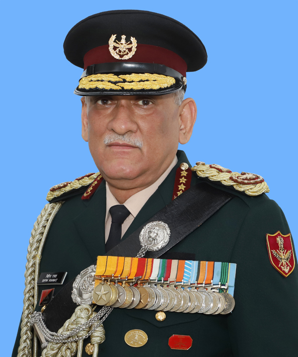
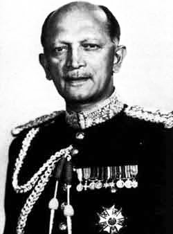
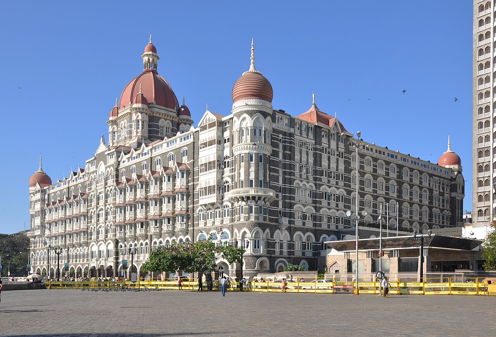
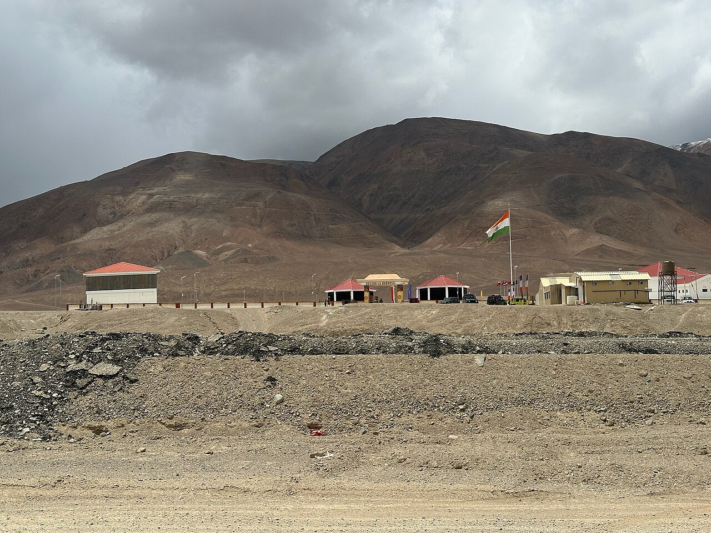
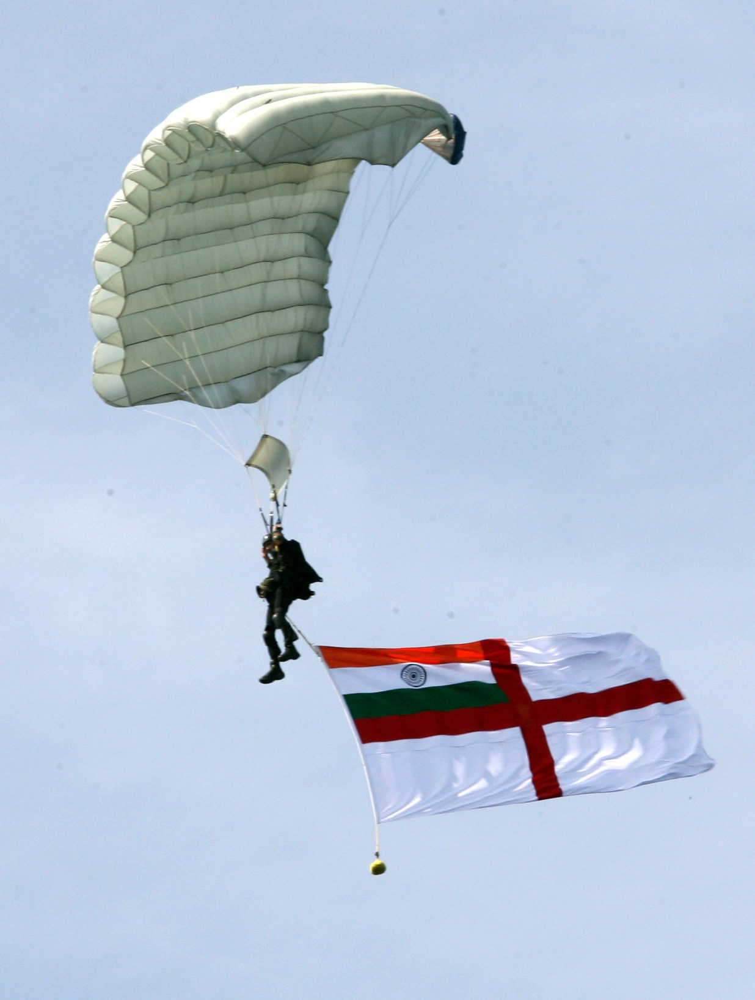
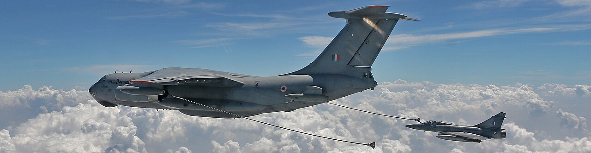
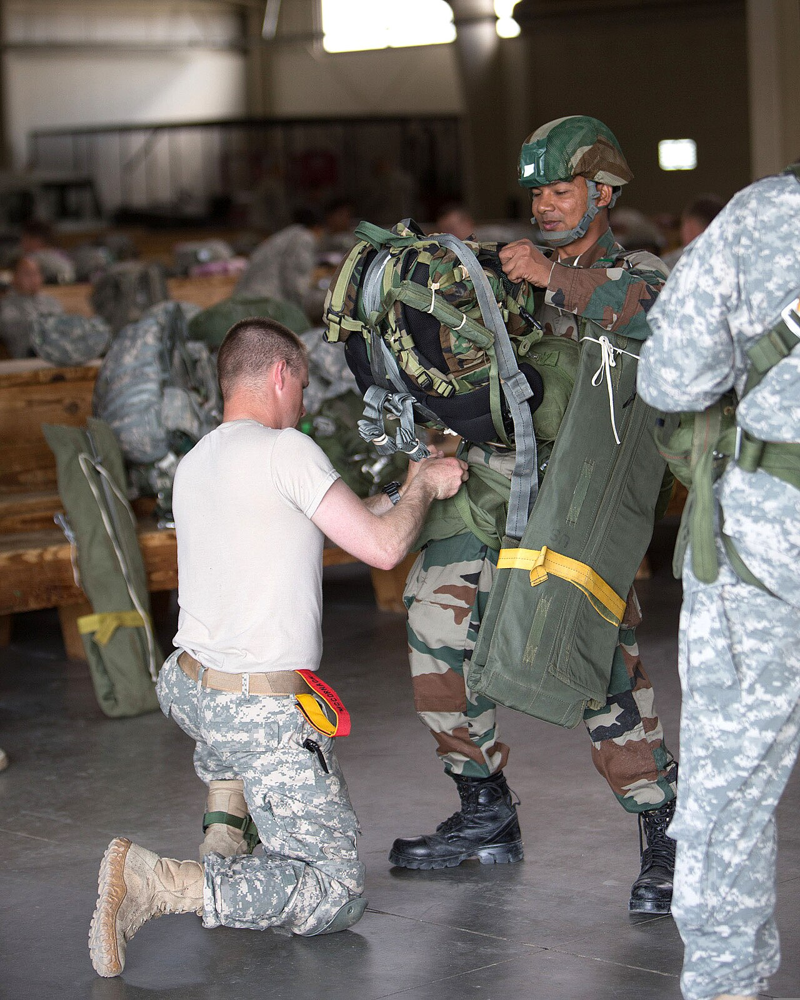

Read a Sample
A Poem, On the House
From “Guardians in the Gale”
The Silence After Victory
A glimpse from the debut collection · 21 poems
Peace is a beautiful thing to hold, Yet its creation is harsh and cold. It demands a sacrifice few can give To ensure others are free to live.
Writing
From the Journal

The History of Sovereignty: From 1857 to Freedom
India's freedom was not given; it was won across a century of sacrifice — from the revolt of 1857 to the Salt March and beyond.
Read article →
Wings of the Republic: India's Struggle to Build Its Own Air Power
The Indian Air Force is sanctioned for far more squadrons than it can field, and the number is falling. The story of a great air force racing to build its own fighters before the gap between ambition and capability becomes a danger.
Read article →
Steel Islands: India's Carriers and the Blue-Water Navy
An aircraft carrier is a piece of sovereign territory that can sail anywhere in the world. The story of India's carriers, the great debate over whether they are worth it, and the transformation of a coastal force into a blue-water navy.
Read article →
The Soldier Question: Agnipath and the Remaking of the Military
India has changed how it recruits and retains its soldiers — a reform that touches the deepest questions of any military: who fights, for how long, and why. The logic of Agnipath, and the fierce debate it ignited.
Read article →
Theatre Commands: The Reform That Will Remake the Indian Military
India is trying to weld three separate services into a single war-fighting machine. Theaterisation is the most consequential — and most contested — defence reform in the country's history.
Read article →
The Drone War Comes to India
Cheap, patient and everywhere, the armed drone has become the defining weapon of the age. India is racing to build its own — and to defend against everyone else's.
Read article →
From Buyer to Seller: India's Defence Export Ambition
The country that was the world's biggest arms buyer is learning to sell. India's defence exports have climbed steeply — and a strategic identity is being rebuilt around them.
Read article →The Hypersonic Race: India's Fastest Weapons
Faster than Mach 5, manoeuvring where old warheads flew straight, hypersonic weapons defeat every shield now standing. India has quietly joined the small club racing to build them.
Read article →
The Thinking Battlefield: AI and India's Military
The next revolution in war will be fought partly by algorithms. India is racing to build military AI — for surveillance, autonomy and decision-making — while wrestling with the questions it raises.
Read article →Guardians of the Sea Lanes: India and the Red Sea Crisis
When missiles and drones turned a great trade artery into a shooting gallery, the Indian Navy surged to sea — escorting ships, fighting pirates, rescuing crews, and announcing India's arrival as a provider of maritime security.
Read article →The Technology Handshake: India and America
Jet engines, chips, AI and space: the technology partnership between India and the United States has become one of the most consequential relationships of the era — and its unspoken subject is China.
Read article →
The India–China Border Dispute: A Himalayan Faultline
Why do India and China still argue over a 3,488 km Himalayan frontier? The LAC, the 1962 war, Aksai Chin and the contest for the roof of the world.
Read article →The Quad: India and the Indo-Pacific Balance
India, the US, Japan and Australia have built a partnership shaping the Indo-Pacific. What the Quad is, why it matters, and its limits.
Read article →The Invisible Front: India's Cyber and Electronic War
The most dangerous front in modern war is one you cannot see — the electromagnetic spectrum and the world's computer networks, where a single intrusion can blind a military or darken a city. India is racing to defend it.
Read article →
China's String of Pearls: and India's Response
China's ring of ports around the Indian Ocean — Gwadar, Hambantota and more — and how India answers with its own 'Necklace of Diamonds'.
Read article →
India and the United States: From Estrangement to Partnership
From Cold War estrangement to a defining 21st-century partnership — the long arc of India–US relations, and the frictions that remain.
Read article →Beneath the Waves: India's Silent Deterrent
Silent, hidden and patient, the submarine is the ultimate instrument of deterrence. India's undersea fleet — including the nuclear-armed boats that complete its nuclear triad — is the least visible and most consequential part of its navy.
Read article →
India and Russia: The Enduring Strategic Friendship
Built on arms, energy and trust, the India–Russia friendship has outlasted the Cold War — but a changing world is testing its limits.
Read article →
BRICS: and the Reshaping of the Global Order
From a banker's acronym to a bloc rebalancing global power — what BRICS is, why it is expanding, and where India fits within it.
Read article →
The High Frontier: India's Militarisation of Space
Modern war runs on satellites — for navigation, communication, surveillance and targeting. As space becomes contested and even weaponised, India has moved to defend the ultimate high ground.
Read article →
India's Quest for a Permanent Seat: at the UN Security Council
Why the world's most populous democracy still has no permanent seat at the UN's top table — India's campaign for reform, and what blocks it.
Read article →
Chabahar Port: India's Gateway to Eurasia
A port on Iran's coast that lets India reach Afghanistan and Central Asia while bypassing Pakistan — the strategy behind Chabahar.
Read article →
India's Act East Policy: Looking to the Pacific Rim
How 'Look East' became 'Act East' — India's effort to bind itself to Southeast Asia and the Pacific in trade, security and culture.
Read article →The Agnipath Scheme: A New Generation of Agniveers
Introduced in 2022, the Agnipath scheme reshaped how India recruits its soldiers. A clear, balanced explainer of the Agniveer model.
Read article →
The Indian Ocean: India's Strategic Backyard
The Indian Ocean carries most of India's trade and energy. Its sea lanes, choke points, island partners — and the navy that guards them.
Read article →
India and Pakistan: Seven Decades of Rivalry
Born together in 1947, India and Pakistan have fought wars and built arsenals. A clear history of South Asia's defining rivalry.
Read article →
Kashmir: The Geopolitics of a Contested Land
Why a Himalayan valley has anchored South Asia's deadliest rivalry for over seventy years — the geography, wars and strategy of Kashmir.
Read article →
India's G20 Presidency: Voice of the Global South
In 2023 India hosted the G20 and made itself the voice of the Global South. What the presidency achieved — and what it signalled.
Read article →
India's Neighbourhood First Policy: Power Begins at Home
A power that cannot manage its own region is no power at all. India's 'Neighbourhood First' policy — its logic, wins, and the China factor.
Read article →
India and Africa: A Partnership of the Global South
Trade, training, medicine and history bind India to Africa. How Delhi builds influence across a continent of a billion — without China's model.
Read article →
Siachen: The World's Highest Battlefield
Over 20,000 feet, where the cold kills more than the enemy. The story of Operation Meghdoot and the soldiers who hold the roof of the world.
Read article →India's Energy Security Dilemma: Fuelling a Rising Power
India imports most of its oil and gas, making energy the hidden hinge of its foreign policy. Choke points, suppliers, and the race to renewables.
Read article →The Chip War: and India's Semiconductor Ambitions
Semiconductors are the oil of the digital age — and the US–China battleground. Where India fits in the chip war, and why it is betting big.
Read article →
Veer Naris: The Families Who Also Serve
Behind every name on a memorial is a family that pays for a lifetime. A tribute to India's Veer Naris — the families who also serve.
Read article →The Malacca Dilemma: and Sea-Lane Security
A narrow strait carries a quarter of the world's trade. The Malacca Dilemma — and why it haunts both China and India.
Read article →
Field Marshal Sam Manekshaw: The Soldier's Soldier
"Sam Bahadur" — India's first Field Marshal, architect of the 1971 victory, and a leader whose wit and integrity became legend.
Read article →
From SAARC to BIMSTEC: India's Search for a Region
South Asia is among the world's least integrated regions. The paralysis of SAARC, the rise of BIMSTEC, and India's search for a working bloc.
Read article →India and the Middle East: Energy, Diaspora, Diplomacy
Oil, nine million workers, and a balance among rivals — India's deepening ties with the Gulf, from I2U2 to a new economic corridor.
Read article →India and Afghanistan: Strategy After the Taliban
India invested deeply in Afghanistan, then watched the Taliban return in 2021. How Delhi protects its interests in a country it cannot reach by land.
Read article →
A Soldier's Last Letter: The Words Left Behind
The most moving documents of any war are the letters soldiers write home before a mission. A reflection on the words left behind.
Read article →India's Nuclear Doctrine: Credible Minimum Deterrence
India tested the bomb, then chose restraint. Inside its nuclear doctrine: no-first-use, credible minimum deterrence, and the triad.
Read article →The Taiwan Strait: Why It Matters to the World
A 180-km strip of water may be the world's most dangerous place. Why the Taiwan Strait shapes the global economy — and India's calculus.
Read article →
Why War Poetry Still Matters
From Wilfred Owen and the poppies of Flanders to Tagore and Subhadra Kumari Chauhan — how a single poem can outlast the war that made it.
Read article →The New Great Game: in the Arctic
As the ice melts, the Arctic opens new routes and resources — and a new great-power contest. Why even India now has a polar policy.
Read article →
Breaking Barriers: Women in the Armed Forces
From the first women fighter pilots to permanent commissions and combat roles — the story of a barrier falling, rank by rank.
Read article →The New Space Race: Geopolitics Beyond Earth
Space is no longer a two-power club. From ISRO's low-cost triumphs to anti-satellite weapons, how orbit became the newest frontier.
Read article →
The National War Memorial: A Home for India's Heroes
For 72 years India had no memorial of its own to its fallen. A walk through the four sacred circles, the eternal flame, and the 25,942 names cut into granite.
Read article →Agni: The Missiles That Guard India's Peace
From Agni-I to the long-range Agni-V, India's home-built missiles anchor its nuclear deterrent. The story of the programme — and deterrence as peace.
Read article →Ayo Gorkhali: The Legend of the Gorkhas
"Better to die than be a coward." The khukri, the war cry "Ayo Gorkhali," and a two-century legend of courage.
Read article →The Indian Coast Guard: Sentinels of the Shore
Guarding 7,500 km of coastline — saving lives, fighting smugglers, and standing as the nation's first line at sea. Meet India's fourth armed force.
Read article →Atmanirbhar Bharat: Self-Reliant Defence
From the Tejas fighter to the home-built INS Vikrant, India is striving to make its own weapons. Why self-reliant defence matters.
Read article →The Indian Military in 2026: A Force Transformed
Theatre commands, indigenous weapons, drones, space and cyber — India's forces are in their biggest transformation in decades. Where things stand in 2026.
Read article →Republic Day: The Promise India Renews
Every 26 January, India marks the day its Constitution came alive. Beyond the parade lies a deeper promise — and its bravest, honoured.
Read article →The Folded Pride: The Story of the Tricolour
Saffron, white and green, with the wheel of law at its heart — the story of the tiranga, and the flag that drapes a fallen hero.
Read article →
Param Vir Chakra: India's Highest Honour for Valour
A mythic medal designed by Savitri Khanolkar, 21 recipients, the first hero Major Somnath Sharma, and the four awarded for Kargil.
Read article →India Gate and the Eternal Flame
A century-old arch, a flame that burned for fifty years for the unknown soldier — and its 2022 journey to a new home.
Read article →
Field Marshal Cariappa: The Man Who Took Command
On 15 January 1949 — now Army Day — K. M. Cariappa became the first Indian to command the Indian Army. The life of a foundational soldier.
Read article →General Bipin Rawat and the Birth of the CDS
In 2020, General Bipin Rawat became India's first Chief of Defence Staff — tasked with uniting three services into one fighting machine. His vision and legacy.
Read article →Arun Khetarpal: "I Will Not Abandon My Tank"
At 21, Arun Khetarpal of the Poona Horse fought a great tank action at Basantar in 1971 — and refused to leave his burning tank. A Param Vir Chakra story.
Read article →1971: The War That Gave Birth to a Nation
Thirteen days in December 1971: the liberation of Bangladesh and the largest military surrender since World War II.
Read article →Operation Parakram: The War That Never Came
After the 2001 Parliament attack, India massed for war and waited ten tense months on the border. The courage of a war that never came.
Read article →
Longewala: 120 Men Against an Armoured Brigade
On the night of 4–5 December 1971, ~120 Indian soldiers held off a Pakistani armoured brigade in the Thar desert until dawn. The story behind the legend.
Read article →INS Vikrant: Sentinel of the Seas
India's first home-built aircraft carrier, heir to a legendary 1971 name — the story of INS Vikrant and a navy that now reaches across oceans.
Read article →
26/11 and the NSG: The Night Mumbai Did Not Fall
Ten terrorists, nearly 60 hours, one city held hostage. How the NSG ended the 26/11 siege — and the major who gave everything.
Read article →The Unknown Soldier: India's Silent Warriors
A war with no medals and no monuments, fought by those who can never be named. A tribute to the unknown soldiers of intelligence.
Read article →
Major Somnath Sharma: India's First Param Vir
At Badgam in 1947, one company stood between the enemy and Srinagar. Major Somnath Sharma held — and the roll of the Param Vir begins with his name.
Read article →Subedar Joginder Singh: The Last Bayonet at Bum La
In 1962, Subedar Joginder Singh and a small platoon held a Himalayan ridge against waves of Chinese troops — fighting on with bayonets when the ammo ran out.
Read article →
1962 and the Last Stand at Rezang La
Within the defeat of 1962 shone supreme courage — the last stand of 120 men of the 13 Kumaon at Rezang La, under Major Shaitan Singh, PVC.
Read article →
MARCOS: The Silent Warriors of the Sea
Beneath the waves and on hostile coasts, the Indian Navy's MARCOS fight unseen. The silent warriors of the sea.
Read article →Wings of the Nation: The Modern Air Force
From the Rafale to the home-grown Tejas — a look at the modern Indian Air Force, and what it means to command the skies.
Read article →
Garud Commandos: Guardians of India's Skies
Named after the divine eagle, the Garud Commandos are the Indian Air Force's elite — the silent guardians of the nation's skies.
Read article →
The Para SF and the 2016 Surgical Strikes
India's most elite soldiers — the maroon-bereted Para SF — and the 2016 surgical strikes that answered the Uri attack.
Read article →1965 and the Graveyard of Tanks at Asal Uttar
In 1965, a Punjab field became a graveyard of Pakistani Patton tanks — and gave India the hero Abdul Hamid, PVC. The story of Asal Uttar.
Read article →
The Battle of Saragarhi: 21 Against an Army
In 1897, twenty-one Sikh soldiers chose to hold their post to the last man against thousands. One of history's greatest last stands.
Read article →Nathu La 1967: When India Answered China
Five years after 1962, Indian troops met the Chinese at the icy passes of Sikkim — and this time, they held. The forgotten victory of 1967.
Read article →
Kargil Vijay Diwas: Why We Remember 26 July
Every 26 July, India marks the day the Kargil War was won. What Vijay Diwas means, and why remembrance is a duty, not a ceremony.
Read article →Remembering Kargil: Operation Vijay and the Heroes of 1999
The world's highest battlefield, the recapture of Tololing and Tiger Hill, the 527 who fell, and why we mark Kargil Vijay Diwas every 26 July.
Read article →Captain Vikram Batra: The Lion of Kargil
"Yeh Dil Maange More." The story of Sher Shah — Captain Vikram Batra, PVC — who died at 24 leading the charge on Kargil's peaks.
Read article →Galwan, 2020: The Night on the Roof of the World
June 2020: the first deadly India–China clash in over 40 years, fought hand-to-hand in the dark at 14,000 feet. The story of Galwan.
Read article →Operation Sindoor, 2025: India's Answer to Pahalgam
May 2025: after the Pahalgam attack killed 26 civilians, India struck back. A clear-eyed look at Operation Sindoor and the four days that followed.
Read article →
Balakot, 2019: The Strike After Pulwama
After Pulwama killed 40 CRPF men in 2019, the IAF struck a terror camp at Balakot. The story of those tense February days.
Read article →New writing, in your inbox
Occasional notes, new poems, and book news. No noise.